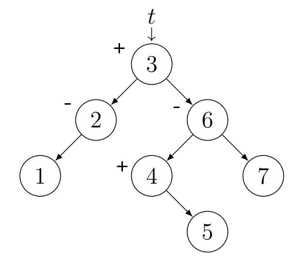

A bináris keresőfák elromolhatnak. Hosszú, listaszerű ágak keletkezhetnek. Így a
műveletvégzés hatékonysága romlik. Ezért fogunk kiegyensúlyozott bináris keresőfákat
használni.
Az AVL fák magasság szerint kiegyensúlyozott bináris keresőfák. Egy
bináris fa
magasság szerint kiegyensúlyozott, ha minden csúcsa kiegyensúlyozott. Egy csúcs
kiegyensúlyozott, ha
a jobb részfájának a magassága mínusz a bal részfájának a magassága $0$, $1$ vagy $-1$. Tehát
a $p$
csúcs
egyensúlya ($p \rightarrow b$) $0$, $1$ vagy $-1$. Ez a képlet ugyanezt írja le: $|h(p \rightarrow
right) - h(p \rightarrow left)| \leq
1$.
Az AVL fákat láncoltan reprezentáljuk. A csúcsokról eltároljuk az értéküket
($key$), az egyensúlyukat ($b$, mint balance) és a bal- és jobb gyereküket ($left, right$). Mivel
magaság szerint kiegyensúlyozottak, így a $b$ (balance) csak $-1$ és $1$ között lehet.
| $Node$ |
$+ key : \mathcal{T}$
$+ b : -1..1$
$+ left, right : Node^*$ |
$+
Node() \{ left :=
right := \emptyset ; b := 0\}$
$+ Node(x : \mathcal{T}) \{ left := right := \emptyset ; b
:= 0 ; key := x\}$ |
Tétel:
Tetszőleges $n$ csúcsú nemüres AVL fa $h$ magasságára igaz, hogy $\lfloor \log n
\rfloor \leq h \leq 1.45 \log n$, azaz $h \in \Theta (\log n)$.
AVL fák zárójelezett alakja:
A bináris fák zárójelezett alakja úgy nézett ki, hogy $(bal \space részfa
\hspace{0.5cm} csúcs \hspace{0.5cm} jobb \space részfa)$. Pl.: $\{ \space [ \space (1) \space 2
\space ] \space 3 \space [ \space ( 4 (5) ) \space 6 \space (7) \space ] \space \}$.
Az AVL fák zárójelezett alakja ugyanígy néz ki annyi különbséggel, hogy a csúcsok
egyensúlyait is jelöljük. A levelek egyensúlya mindig nulla, ezért azokat nem jelöljük.
Egyensúlyok:
- $o$ $0$
- $+$ $1$
- $++$ $2$
- $-$ $-1$
- $--$ $-2$
Pl.: $\{ \space [ \space (1) \space 2- \space ] \space 3+ \space [ \space ( 4+
(5) ) \space 6- \space (7) \space ] \space \}$.

AVL fák műveletei:
Mivel az AVL fák speciális alakú keresőfák, így a keresőfákra bevezetett
műveletek továbbra is érvényesek. Annyi lesz a különbség, hogy minden művelet után
ellenőriznünk
kell az AVL-tulajdonságot, és ha kell, helyreállítjuk. A helyreállításhoz forgatásokat fogunk
használni.
Forgatások:
insert:
Megkeressük a kulcs helyét a fában, tehát megyünk lefelé a
kulcsösszehasonlításokkal mindaddig, amíg nullpointert nem találunk. Pontosan ennek a nullpointernek
a helyére kell beilleszteni a kulcsot. Viszont, ha a kulcsösszehasonlítások során a kulcsok
egyenlőek, akkor az azt jelenti, hogy a kulcs már benne van a fában. Mivel a keresőfában minden
kulcs egyedi, így nem kell beszúrni ezt a kulcsot.
Ha sikeres a beszúrás, a részfa magassága egyel nőtt, ezért újra kell számolnunk
a csúcsok egyensúlyait, de csak a beszúrás nyomvonalán visszafelé haladva (mindig egyet felfelé
lépünk) és csak itt kell kiegyensúlyoznunk, ha kiegyensúlyozatlan csúcsot találunk. Minden beszúrást
legfeljebb egyetlen kiegyensúlyozás követ. Ha a jobb részfa
lett magasabb, hozzáadunk az egyensúlyhoz egyet, ha a bal, levonunk belőle egyet.
Ha az aktuális csúcs egyensúlya $0$ lett, akkor az aktuális csúcshoz tartozó
részfa
alacsonyabb ága hozzá nőtt a magasabbikhoz, tehát az aktuális részfa most ugyanolyan magas, mint a
beszúrás előtt volt, és így egyetlen más csúcs egyensúlyát sem kell módosítani.
Ha az aktuális csúcs új egyensúlya $1$ vagy $-1$, akkor előtte $0$ volt, ezért az
aktuális részfa magasabb lett eggyel. Ekkor haladunk feljebb a beszúrás nyomvonalán, tehát
egyel
feljebb lépünk és ott is ellenőrizzük a csúcs egyensúlyát.
Ha az aktuális csúcs új egyensúlya $2$ vagy $-2$, akkor a hozzá tartozó részfát
ki
kell egyensúlyozni. A kiegyensúlyozás után az aktuális részfa visszanyeri a beszúrás
előtti
magasságát, ezért már egyetlen más csúcs egyensúlyát sem kell módosítani.
$t = \emptyset$
|
| $t := \text{new} \space Node(k)$ |
$k < t \rightarrow key$
|
$k > t \rightarrow key$
|
$\text{ELSE}$
|
| $d := true$ |
$AVLinsert(t \rightarrow left, k, d)$
|
$AVLinsert(t \rightarrow right, k, d)$
|
$d := false$ |
$d$
|
$d$
|
| $leftSubTreeGrown(t, d)$ |
$\text{SKIP}$ |
$rightSubTreeGrown(t, d)$ |
$\text{SKIP}$ |
$t \rightarrow b = -1$
|
| $l := t \rightarrow left$ |
$t \rightarrow b := t \rightarrow b -1$
|
$l \rightarrow b = -1$
|
$d := (t \rightarrow b < 0)$ |
| $balanceMMm(t, l)$ |
$balanceMMp(t, l)$ |
| $d := false$ |
$t \rightarrow b = 1$
|
| $r := t \rightarrow right$ |
$t \rightarrow b := t \rightarrow b +1$
|
$r \rightarrow b = 1$
|
$d := (t \rightarrow b > 0)$ |
| $balancePPp(t, l)$ |
$balancePPm(t, l)$ |
| $d := false$ |
| $t \rightarrow right := r \rightarrow
left$
|
| $r \rightarrow left := t$ |
| $t \rightarrow b := 0$ |
| $r \rightarrow b := t \rightarrow b$
|
| $t := r$ |
| $t \rightarrow left := l \rightarrow
right$
|
| $l \rightarrow right := t$ |
| $t \rightarrow b := 0$ |
| $l \rightarrow b := t \rightarrow b$
|
| $t := l$ |
| $l := r \rightarrow left$ |
| $t \rightarrow right := l \rightarrow
left$
|
| $r \rightarrow left := l \rightarrow
right$
|
| $l \rightarrow left := t$ |
| $l \rightarrow right := r$ |
| $t \rightarrow b := - \lfloor (l
\rightarrow b
+ 1) / 2 \rfloor$ |
| $r \rightarrow b := \lfloor (1-l
\rightarrow b)
/ 2 \rfloor$ |
| $l \rightarrow b := 0$ |
| $t := l$ |
| $r := l \rightarrow right$ |
| $l \rightarrow right := r \rightarrow
left$
|
| $t \rightarrow left := r \rightarrow
right$
|
| $r \rightarrow left := l$ |
| $r \rightarrow right := t$ |
| $l \rightarrow b := - \lfloor (r
\rightarrow b
+ 1) / 2 \rfloor$ |
| $t \rightarrow b := \lfloor (1-r
\rightarrow b)
/ 2 \rfloor$ |
| $r \rightarrow b := 0$ |
| $t := r$ |
Példa:
21 beszúrása:
19 beszúrása:
remMin:
Először megkeressük a minimális kulcsú elemet. A minimális kulcsú elem mindig
könnyen megtalálható, ha addig követjük a bal oldali gyerekeket, amíg nullpointert nem találunk.
Mivel a minimális kulcsú elemnek nincs bal gyereke, így egyszerűen csak a jobb gyerekét rakjuk a
helyére. A szülőhöz visszalépve beállítjuk az egyensúlyát. Ha a szülő egyensúlya 0 lesz, akkor
feljebb kell lépni, egyébként nem kell. Ha kell forgassunk valamelyik balra forgatással ((++, 0),
(++, +), (++, -)).
A beszúrással szemben lényeges különbség, hogy ott minden beszúrást csak egyetlen
kiegyensúlyozás követ, míg itt előfordulhat, hogy a minimális csúcs eltávolítása után, minden
felette lévő szinten ki kell egyensúlyozni.
$t \rightarrow left = \emptyset$
|
| $minp := t$
|
$AVLremMin(t
\rightarrow left, minp, d)$ |
| $t := minp
\rightarrow right$ |
| $minp
\rightarrow right := \emptyset$ |
$d$
|
| $d := true$ |
$leftSubTreeShrunk(t, d)$ |
$\text{SKIP}$ |
$t \rightarrow b = 1$
|
| $balancePP(t, d)$ |
$t \rightarrow b := t \rightarrow b + 1$
|
| $d := (t \rightarrow b = 0)$ |
| $r := t \rightarrow right$ |
$r \rightarrow b = -1$
|
$r \rightarrow b = 0$
|
$r \rightarrow b = 1$
|
| $balancePPm(t, r)$ |
$balancePP0(t, r)$ |
$balancePPp(t, r)$ |
| $d := false$ |
| $t \rightarrow right := r \rightarrow left$
|
| $r \rightarrow left := t$ |
| $t \rightarrow b := 1$ |
| $r \rightarrow b := -1$ |
| $t := r$ |
del:
Rekurzívan megkeressük a törlendő elemet. Három eset lehetséges:
- A törlendő csúcsnak nincs bal gyereke, ekkor a helyét a jobb gyerek veszi át.
- A törlendő csúcsnak nincs jobb gyereke, ekkor a helyét a bal gyerek veszi át.
- A törlendő csúcsnak kettő gyereke van, ekkor a jobb részfa minimuma kerül a
helyére, használva a $remMin()$ eljárást. (Természetesen a bal oldali részfa maximuma is
megfelelő
lenne a törlendő elem helyére.)
Ez után szükséges a rekurzív hívások szintjén ellenőrizni, hogy van-e szükség
kiegyensúlyozásra. A legrosszabb esetben akár minden szinten is ki kell egyensúlyozni.
$t \neq \emptyset$
|
$k < t \rightarrow key$
|
$k > t \rightarrow key$
|
$k = t \rightarrow key$
|
$d := false$ |
| $AVLdel(t
\rightarrow left, k, d)$ |
$AVLdel(t
\rightarrow right, k, d)$ |
$AVLdelRoot(t, d)$
|
$d$
|
$d$
|
| $leftSubTreeShrunk(t, d)$ |
$\text{SKIP}$ |
$rightSubTreeShrunk(t, d)$ |
$\text{SKIP}$ |
$t \rightarrow left = \emptyset$
|
$t \rightarrow right = \emptyset$
|
$t \rightarrow left \neq \emptyset \land t \rightarrow right \neq
\emptyset$
|
| $p := t$ |
$p := t$ |
$rightSubTreeMinToRoot(t, d)$ |
| $t := p \rightarrow right$ |
$t := p \rightarrow left$ |
| $\text{delete} \space p$ |
$\text{delete} \space p$ |
$d$
|
| $d := true$ |
$d := true$ |
$rightSubTreeShrunk(t, d)$ |
$\text{SKIP}$ |
| $AVLremMin(t \rightarrow right, p, d)$ |
| $p \rightarrow left := t \rightarrow left$ |
| $p \rightarrow right := t \rightarrow right$
|
| $p \rightarrow b := t \rightarrow b$ |
| $\text{delete} \space t$ |
| $t := p$ |
Példa:
32 törlése:
Műveletigény:
- Beszúrás helyének megkeresése: $log \space n$
- AVL tulajdonság ellenőrzése: $log \space n$
- Jelzők beállítása: konstans időben megtörténik
Így a teljes műveletigénye:
- $MT_{insert}(n) \in \Theta(log \space n)$
Egyetlen kiegyensúlyozás sem tartalmaz se rekurziót, se ciklust, és ezért
konstans számú eljáráshívásból áll. Tehát a $remMin()$ és a $del()$ műveletigényei is:
- $MT_{remMin}(n) \in \Theta(log \space n)$
- $MT_{del}(n) \in \Theta(log \space n)$
Gyakorlati alkalmazása:
AVL fákat használunk minden típusú memóriában tárolt gyűjteményhez, beleértve a
halmazokat és a dictionary-ket is.